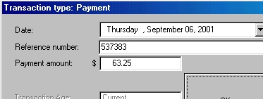

Posting invoices and credit notes
Invoices and credit notes are automatically posted to accounts receivable when they are created.
Applying a payment to an account
Step 1:
From the main menu click on Debtors and then on Transactions. The Debtors Transaction window will open.
Step 2:
Select a customer by either typing the customer key in the Customer field, using back-slash or other shortcuts or by clicking the Seek (F3) button and using the Find window.
Step 3:
Right click anywhere in the window and select Payment from the drop down menu.

Step 4:
Enter the customer's Reference number and then the Payment amount. Click OK. You will be given the option to print a receipt (on the docket printer).
Step 5:
The Tender Type window will now open. Complete this in the same way as for Cash Sales.
Step 6:
· You will now be prompted apply the payment to a particular debit (either Invoice or Journal Debit).
· The oldest debit will be displayed. Keep clicking the Not this one button until the debit you are after appears.
· Click the Credit This Transaction button.
· You will now be prompted for the amount to be applied against this debit. Enter the amount and click OK.
· If there is still an amount to be credited, keep selecting debits until all of the credit has be applied.
Journal debits and credits.
Journals are handled in exactly the same way as payments except that, instead of Payment, you select Debit Journal or Credit Journal from the drop down menu.
· Journal Credits can be applied against any outstanding debit.
If no debit is selected, these entries appear on the account as unapplied credits.
· Journal Debits can be applied against Credits, Journal Credits, or any unapplied payments.
Manual Invoices
Manual Invoices can be entered on the account in exactly the same way as payments except that, instead of Payment, you select Invoice from the drop down menu.
You'll be asked for a date, reference number, then the amount.
Normally, of course, invoices are raised in Bookscan and automatically posted here. The manual invoice entry allows you to enter an invoice raised externally.
Applying unallocated payments and credits.
If a credit transaction has been left unapplied, it can be picked up and applied against a debit transaction.
In the Debtor Transactions screen, right click on the credit or payment you wish to allocate.
This will open the Credit Allocation Window. Proceed as in Step 6 above.
 Return to accounts receivable summary
Return to accounts receivable summary